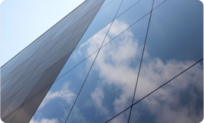

Vidros Temperados

Os vidros temperados são produtos de alta resistência e segurança, obtidos por meio de um processo térmico. Esse método de têmpera confere ao vidro uma robustez até cinco vezes superior ao vidro comum, tornando-o mais resistente a impactos.
Principais Características
- Resiste ao choque térmico, flexão, flambagem, torção e peso;
- Em caso de quebra, fragmenta-se em pequenos pedaços pouco cortantes, o que diminui o risco de ferimentos.;
- É muito utilizado na construção civil e na decoração. É também o único vidro que pode ser aplicado como porta, sem a utilização de caixilhos.;